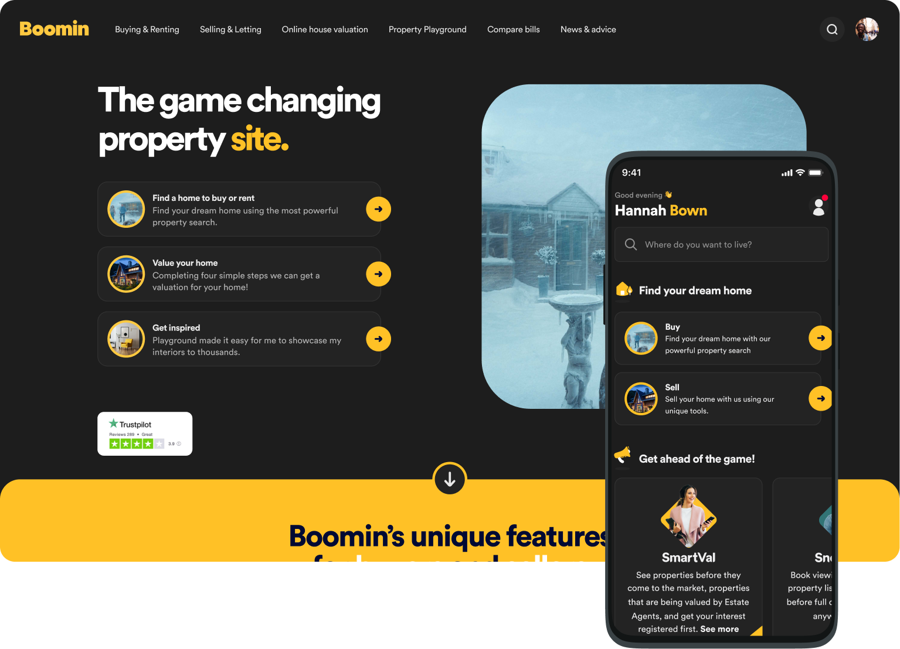
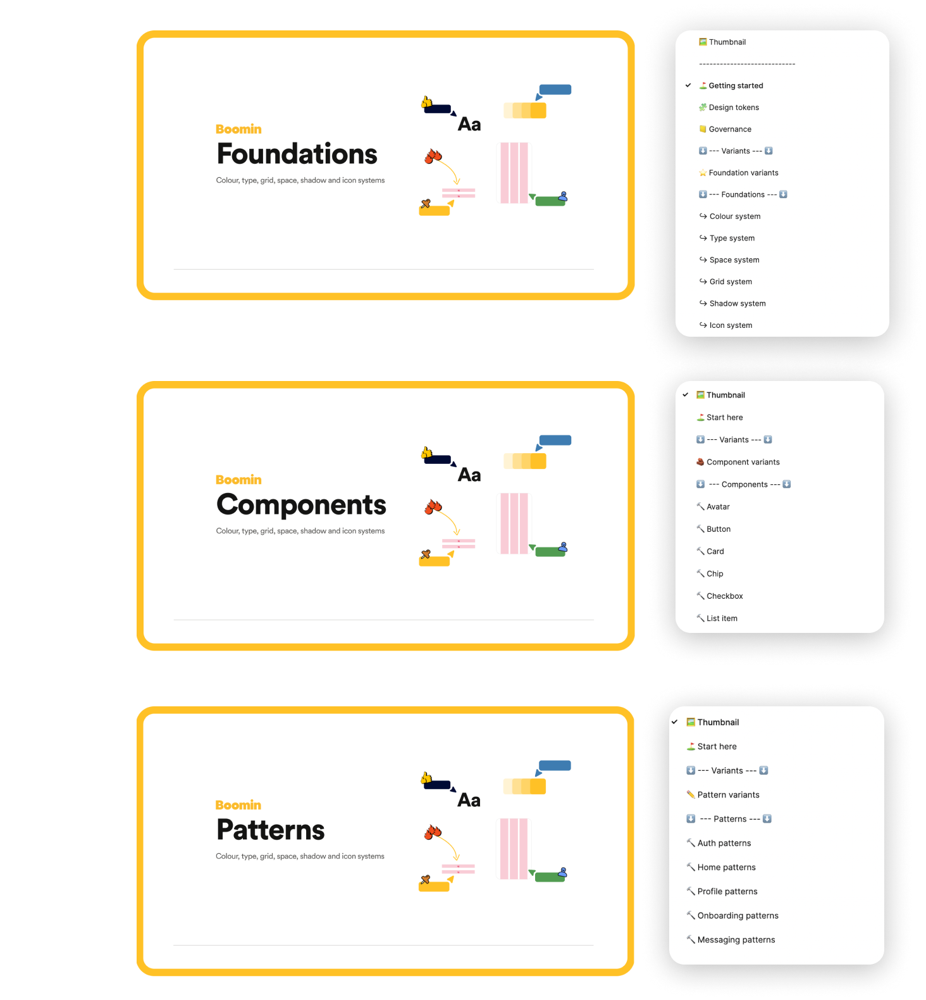
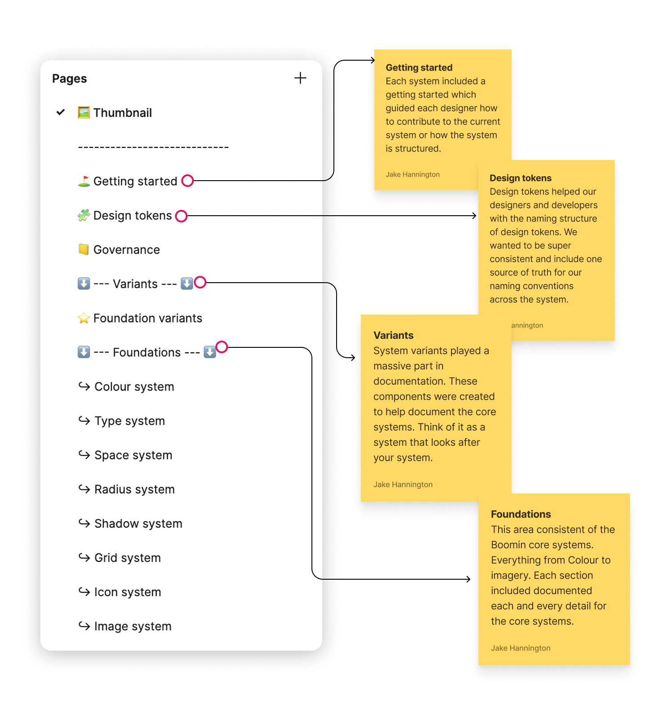
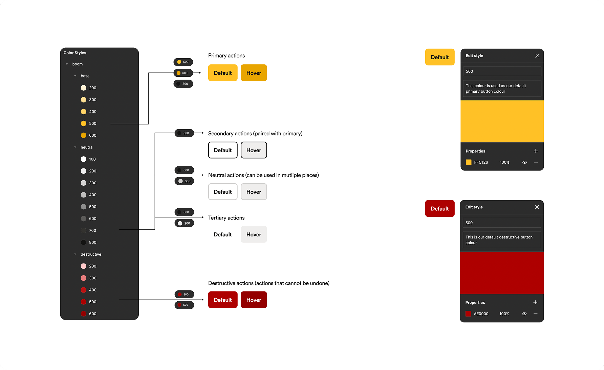
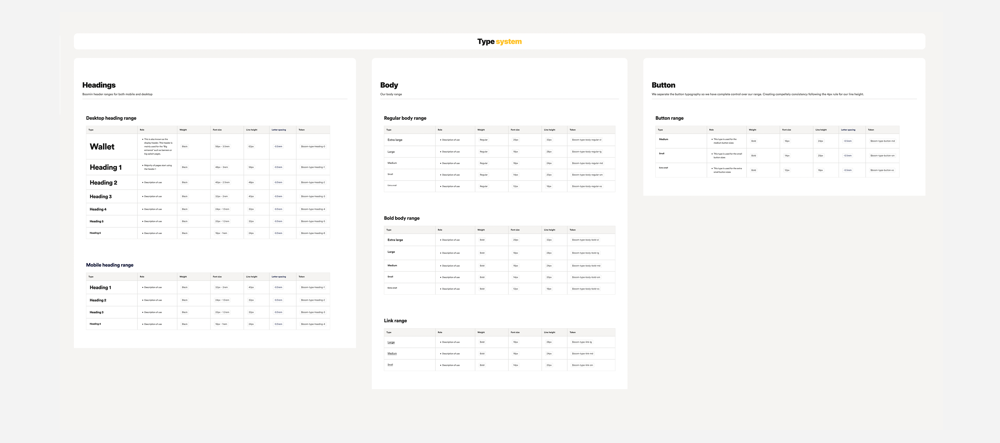
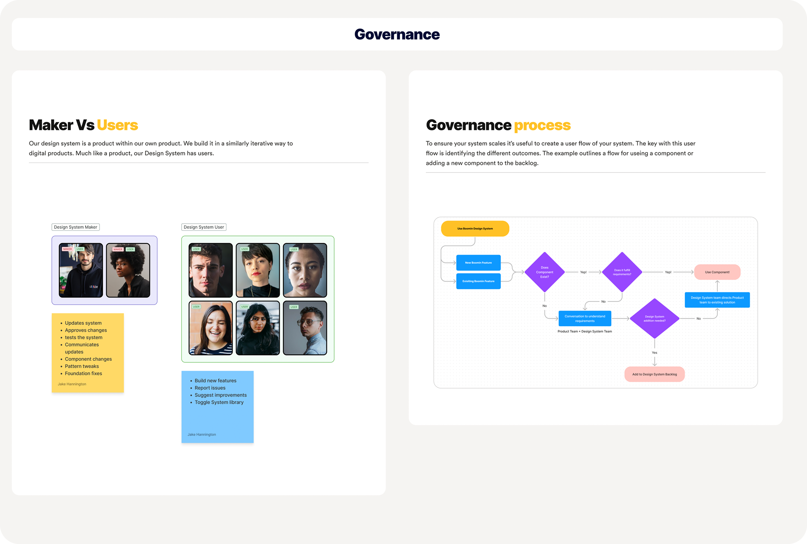

Boomin design system
Building the foundation for a scalable design system

Quick read
Project overview
Creating a system that provides a single source of truth for designers and developers is critical when building complex journeys and UI interfaces. Boomin needed solid foundations to work from when scaling existing and upcoming products.
I led the design and build of the Boomin design system — known internally as Mosaic — focusing on the foundations layer: colour, type, grid, space, shadow and icon systems. The goal was to reduce design and development debt while giving both teams the autonomy to move faster and with confidence.
Responsibilities
Design system architecture, foundations design, documentation, governance, design tokens, team communication
Target users
Product designers, frontend developers and the wider Boomin product team
Outcome
Full team adoption across Boomin — every designer and developer contributing to and building with the system
Scope
Foundations layer — colour, type, grid, space, shadow and icon systems across web and app
Problem statement
No system meant no consistency, no confidence, and no way to scale.
Boomin had no shared design foundation. Designers and developers were making independent decisions about colour, type, spacing and components — creating fragmented UI, duplicated effort and growing debt on both sides.
Without a system, every new feature started from scratch. There was no single source of truth, no governance process, and no way to ensure consistency as the product and team grew. Scaling was becoming a real problem.
Core challenges
- No shared foundations — colour, type and spacing decisions made in isolation
- Design and development debt accumulating with every new feature
- No naming conventions — tokens and styles inconsistent across files
- Designers spending time rebuilding patterns that already existed elsewhere
- No governance process for contributing to or maintaining the system
- Difficult to onboard new team members without documentation

Structure & approach
Understanding who we were
building the system for.
Before building anything, we needed to understand the constraints — technical limitations, team workflows and what good governance looked like for Boomin. We worked closely with developers early to understand what the system needed to communicate and how it should be structured.
The system was structured across three libraries: Foundations, Components and Patterns. This case study focuses on Foundations — the ingredients everything else is built from.
Each foundation system included a getting started guide to help designers contribute correctly, system variants for internal documentation, and thorough anatomy tables so every element had a clear role and rule.
What we established early
- Dedicated weekly time to build Mosaic alongside live product work
- Close collaboration with developers to agree naming conventions and technical constraints
- A Maker vs User model — clear roles for who maintains vs who consumes the system
- A governance process based on the Brad Frost approach, adapted for Boomin
- Loom and Slack as the communication layer for updates and changes


Foundations
Building the core systems
Each foundation system was documented using a consistent anatomy table format — covering role, usage rules, accessibility requirements and token references. This gave both designers and developers a single place to make informed decisions.
System variants played a critical role in documentation. These internal-only components acted as a system within the system — reusable documentation components that kept every foundation section consistent and easy to maintain.
Scalability was a priority from day one. Every system was built to grow — whether that meant adding new token scales, extending the colour palette, or introducing new type roles — without breaking what already existed.

Faster delivery
Reusable foundations enabling design decisions to be made faster without rebuilding from scratch

Accessibility built in
Contrast ratios and accessibility rules documented alongside every colour and type decision

Scalable by design
Every system built to extend without breaking existing decisions or requiring a rebuild

Outcomes
A system the whole team owned and used
Mosaic went from zero to a fully adopted system across the Boomin product team. Designers and developers were contributing, maintaining and building with it — reducing the reliance on one-off decisions and giving everyone a shared language to work from.

Increased adoption
Every designer and developer across Boomin using and contributing to the system

Single source of truth
Fragmented design decisions replaced by a shared, documented foundation

Reduced tech & design debt
Reusable foundations meant faster delivery and fewer one-off solutions across the product
Governance
Maker vs User — clear roles, clear process
Governance was central to the system working at scale. We established a clear Maker vs User model — the Maker maintains and future-proofs the system, the User builds with it and feeds back through a structured process.
The governance flow ensured designers always checked whether a component existed before creating something new. If it didn't exist, a conversation was started — keeping the backlog managed and the system intentional rather than sprawling.
Updates were communicated via Loom recordings and a dedicated Slack channel, keeping the whole team informed of changes without requiring synchronous time together.
Maker role
Maintains, approves and future-proofs the system — communicates updates to the wider team
User role
Builds features using the system — flags new patterns and problems through the feedback loop
Communication
Loom videos and a dedicated Slack channel kept the team in sync on all system changes

Learnings
What building Mosaic taught me
Building a design system from scratch while working on live product taught me that process matters as much as craft. The system only worked because the team understood it, trusted it and felt ownership over it.
What worked
- Involving developers from the start meant token naming conventions were practical, not just design-side thinking
- System variants made documentation consistent and fast to maintain
- Loom updates kept the team informed without eating into delivery time
- The Maker vs User model gave the system a clear owner while keeping it open to contribution
What I'd do differently
- Establish governance earlier — retrofitting a process onto an existing system is harder than building it in from day one
- Track adoption metrics from the start — qualitative feedback is valuable but numbers make the case more clearly
- Invest more in onboarding documentation for new joiners
Mosaic became more than a Figma file — it became a shared language for the whole product team. If extending it further, I'd look to formalise the component contribution process and introduce automated token sync between design and code.